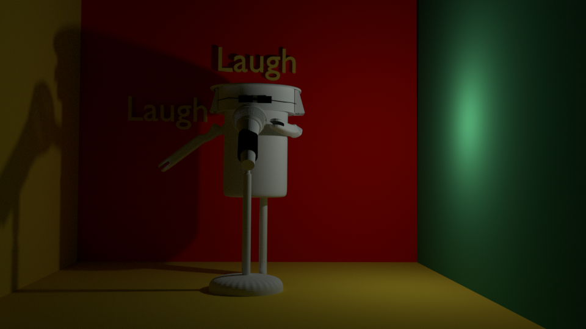

Hello and welcome to the website of the unknown composer OatmealBreakfast.
Be the second Ok, only person to learn about OatmealBreakfast. An obscure composer with not much music to the OatmealBreakfast name. OatmealBreakfast is a figment of my imagination. He she or it is a robot in the shape of a garbage can. As the picture below will show. Go OatmealBreakfast go. Do your thing and dance Make otherpeople dance. Make that one persons life who listens to your music better.
The picture is of OatmealBreakfast on stage doing his or her garbage can magic.